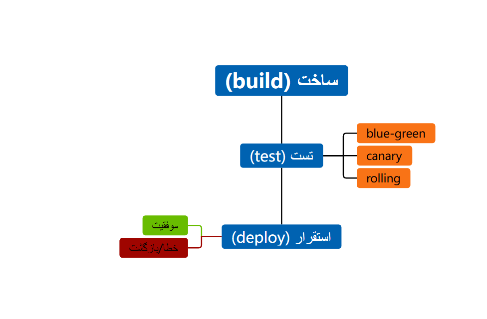

نمودار زیر فرآیند CI/CD Pipeline را نشان میدهد که شامل مراحل Build, Test, Deploy و استراتژیهای استقرار مختلف است. این فرآیند تضمین میکند که کد تولیدی به طور خودکار و ایمن به محیط تولید منتقل شود.
مراحل اصلی
استراتژیهای استقرار
موفقیت
خطا / بازگشت
